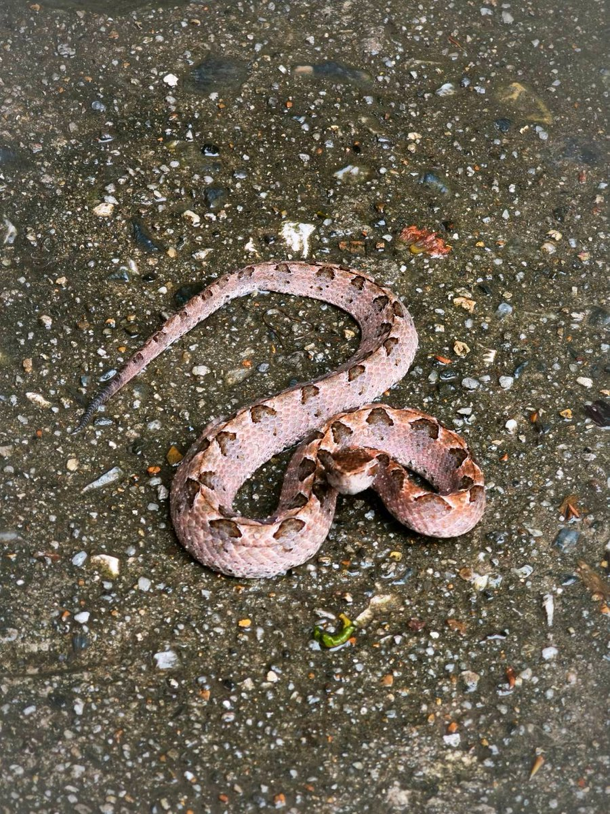
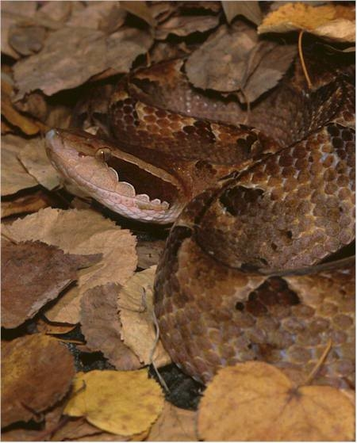

.jpg)


.jpg)
งูกะปะ (Malayan pit viper)
ชื่อวิทยาศาสตร์: Calloselasma rhodostoma
ลักษณะทั่วไป
งูกะปะเป็นงูขนาดเล็ก ลำตัวค่อนข้างอ้วนทุบและสั้น ความยาวลำตัวโดยทั่วไปเมื่อโตเต็มวัยจะอยู่ที่ประมาณ 60–100 เซนติเมตร โดยตัวเมียจะมีขนาดใหญ่และอ้วนกว่าตัวผู้เล็กน้อย เกล็ดบนลำตัวมีลักษณะเรียบ ไม่ขรุขระหรือเป็นสันคมเหมือนงูแมวเซา ทำให้ลำตัวดูเป็นมันเงาเล็กน้อย สีพื้นของลำตัวจะแปรผันตั้งแต่สีน้ำตาลเทา น้ำตาลแดง สีน้ำตาลส้ม ไปจนถึงสีน้ำตาลช็อกโกแลต ตลอดแนวสองข้างของลำตัว จะมีลายรูปสามเหลี่ยมสีน้ำตาลเข้มหรือสีดำ ขอบของสามเหลี่ยมเป็นเส้นสีขาวหรือสีส้มอ่อน สลับกันไปมาตลอดความยาวลำตัวตั้งแต่คอจนถึงโคนหาง เมื่อมองจากด้านบน ลายสามเหลี่ยมทั้งสองข้างอาจตรงกันหรือสลับเหลื่อมกัน เกิดเป็นลวดลายเรขาคณิตที่สมบูรณ์แบบ พื้นท้องมีสีขาวหรือสีครีม มีจุดหรือรอยแต้มสีน้ำตาลเข้มกระจายอยู่ทั่ว ลวดลายสามเหลี่ยมและโทนสีน้ำตาล-เทาของงูกะปะถูกวิวัฒนาการมาอย่างยาวนานเพื่อการกลมกลืนกับพื้นดิน กองใบไม้แห้ง เศษไม้ และร่มเงาในป่า หากมันขดตัวนิ่งอยู่บนกองใบไม้แห้ง เหยื่อและสัตว์นักล่าแทบจะไม่สามารถมองเห็นหรือแยกแยะงูกะปะออกจากสิ่งแวดล้อมได้เลย หัวของงูกะปะมีความโดดเด่นอย่างมาก โดยมีลักษณะเป็นรูปสามเหลี่ยมทรงแบน คอคอดกิ่วอย่างเห็นได้ชัด ทำให้หัวแยกออกจากลำตัวได้อย่างชัดเจน ปลายปากและสนมเชิดงอนขึ้นเล็กน้อย ซึ่งเป็นเอกลักษณ์สำคัญที่ทำให้สามารถแยกแยะงูกะปะออกจากงูพิษชนิดอื่นได้ง่าย ระหว่างรูจมูกและตาทั้งสองข้าง มีอวัยวะพิเศษที่เป็นร่องลึก (Pit) ทำหน้าที่เป็นเซนเซอร์ตรวจจับรังสีอินฟราเรดหรือความร้อนจากร่างกายของสัตว์เลือดอุ่น ช่วยให้งูกะปะสามารถกะระยะและฉกเหยื่อได้อย่างแม่นยำแม้ในความมืดสนิท ตากลมโต มีม่านตาเป็นช่องแนวตั้ง (Vertical Pupil) เหมือนตาแมว ซึ่งเป็นลักษณะเฉพาะของสัตว์ที่ออกหากินในเวลากลางคืน งูกะปะมีเขี้ยวพิษขนาดใหญ่ ยาว และโค้ง อยู่บริเวณด้านหน้าของขากรรไกรบน เขี้ยวนี้เป็นท่อโพรงภายในเหมือนเข็มฉีดยา และสามารถพับเก็บแนบไปกับเพดานปากได้เมื่อปิดปาก และจะกางยื่นออกมาทันทีเมื่อเปิดปากฉก ปกติงูกะปะเป็นงูที่เลื้อยช้า ไม่ปราดเปรียว หากมีสิ่งรบกวนหรือมีคนเดินเข้าใกล้ มันจะไม่เลื้อยหนีเหมือนงูชนิดอื่น แต่จะขดตัวแน่น ลำตัวเกร็ง และเชิดหัวขึ้นเตรียมพร้อมฉก ความไม่หนีนี้เองที่ทำให้เกิดอุบัติเหตุคนเดินไปเหยียบหรือเข้าใกล้โดยไม่รู้ตัว แม้ตัวจะเลื้อยช้า แต่จังหวะการฉกของงูกะปะมีความรวดเร็วและแม่นยำสูงมาก โดยสามารถพุ่งฉกได้ไกลถึง 1 ใน 3 ของความยาวลำตัว งูกะปะเป็นสัตว์กินเนื้อ (Carnivore) ที่จัดอยู่ในกลุ่มนักล่าสายซุ่มโจมตี (Ambush Predator) โดยมักจะเลือกกินหนูชนิดต่างๆ (หนูพุก, หนูท้องขาว) ซึ่งเป็นอาหารหลักของงูกะปะเมื่อโตเต็มวัย กบ, เขียด, คางคก (โดยเฉพาะงูกะปะวัยอ่อนจะกินกบเขียดขนาดเล็กเป็นหลัก) จิ้งจก, ตุ๊กแก, กิ้งก่า, และงูขนาดเล็กชนิดอื่น รวมถึงนกขนาดเล็กที่หากินตามพื้นดิน งูกะปะจะไม่เลื้อยตระเวนหาเหยื่อแบบงูบางชนิด แต่จะใช้วิธี "ขดตัวนิ่งซุ่มรอ" (Sit-and-wait) โดยจะเลือกสถานที่ที่เหยื่อเดินผ่านบ่อยๆ เช่น รอยทางเดินของหนูใต้กองใบไม้ แล้วใช้ลวดลายสามเหลี่ยมบนลำตัวพรางตัวให้เข้ากับสภาพแวดล้อม เมื่อเหยื่อเข้ามาในระยะฉก งูกะปะจะพุ่งตัวฉกด้วยความเร็วสูง พร้อมฉีดพิษเข้าสู่ร่างกายเหยื่ออย่างลึก จากนั้นจะปล่อยเหยื่อให้วิ่งหนีไป พิษจะเข้าทำลายระบบเลือดและเนื้อเยื่อจนเหยื่อสิ้นใจในเวลาไม่นาน แล้วงูกะปะจะใช้ลิ้นสองแฉกติดตามกลิ่นตามไปกินเหยื่อภายหลัง
ถิ่นอาศัย พิษ และความอันตราย
- ถิ่นอาศัย: พบได้แพร่หลายในแถบเอเชียใต้และเอเชียตะวันออกเฉียงใต้ ได้แก่ ไทย, ลาว, กัมพูชา, เวียดนาม, มาเลเซีย (ทางตอนเหนือ), อินโดนีเซีย (โดยเฉพาะเกาะชวา) และเนปาล พบได้ทุกภาคของประเทศไทย ไม่ได้จำกัดอยู่แค่พื้นที่ใดพื้นที่หนึ่ง งูกะปะมักชอบอาศัยอยู่ในพื้นที่ที่มีลักษณะจำเพาะ ซึ่งเอื้อต่อการพรางตัวและการซุ่มจับเหยื่อ ได้แก่ พื้นที่เกษตรกรรมและสวนรอบบ้าน (สวนยางพารา สวนปาล์มน้ำมัน และสวนผลไม้ ถือเป็นถิ่นอาศัยที่พบงูกะปะได้บ่อยที่สุด เนื่องจากมีร่มเงา ความชื้น และประชากรหนู (เหยื่อหลัก) อาศัยอยู่เป็นจำนวนมาก) ป่าราบต่ำและป่าละเมาะ กองใบไม้แห้งและทับถม (ซึ่งสีของใบไม้แห้งจะเข้ากับลวดลายบนตัวงูพอดี) โคนต้นไม้ hollows หรือใต้ก้อนหิน/กิ่งไม้ทับถม กองไม้เก่า กองอิฐ หรือใต้ถุนบ้านเรือนในพื้นที่ชนบท มักไม่ค่อยพบในป่าดงดิบสมบูรณ์หรือพื้นที่ภูเขาสูงมากนัก เนื่องจากกิจกรรมทางเกษตรกรรม (เช่น สวนยาง สวนปาล์ม) มักดึงดูดสัตว์ฟันแทะ งูกะปะจึงปรับตัวเข้ามาอาศัยใกล้กับพื้นที่ทำกินของมนุษย์ ทำให้เกิดการประเชิญหน้าและเหยียบโดนตัวงูบ่อยครั้งกว่างูพิษชนิดอื่น
- พิษ:พิษของงูกะปะจัดเป็น พิษที่มีผลต่อระบบเลือด (Hematotoxin) และ ทำลายเนื้อเยื่อบริเวณที่ถูกกัดอย่างรุนแรง (Cytotoxin/Necrotoxin) ซึ่งเป็นความรุนแรงหลักสองด้านที่ทำให้งูกะปะเป็นอันตรายถึงชีวิต พิษมีเอนไซม์กลุ่ม Thrombin-like enzymes (เช่น Ancrod) ที่เข้ากระตุ้นไฟบริโนเจนในเลือดให้กลายเป็นไฟบรินอย่างรวดเร็ว ส่งผลให้เกล็ดเลือดและโปรตีนที่ช่วยในการแข็งตัวของเลือดถูกใช้หมดไปจากร่างกายอย่างรวดเร็ว (Defibrinogenation) ทำให้เลือดของผู้ป่วยไหลไม่หยุด นอกจากนี้ยังมีเอนไซม์ทำลายโปรตีน (Proteolytic enzymes) และ Metalloproteinases ที่ย่อยสลายผนังหลอดเลือดฝอยและเซลล์เนื้อเยื่อโดยตรง ทำให้เกิดการรั่วไหลของเลือดและของเหลวเข้ามาในเนื้อเยื่อ เกิดการอักเสบ ปวด บวม และเซลล์ตายเฉียบพลัน เมื่อถูกกัดจะมีอาการเลือดไหลไม่หยุดจากรอยเขี้ยวที่ถูกกัด ปวดตึงอย่างรุนแรงทันที ณ บริเวณแผลเขี้ยว และรอยบวมจะลุกลามขยายกว้างขึ้นเรื่อยๆ ตามเวลา ภายในไม่กี่ชั่วโมง ผิวหนังรอบๆ แผลจะเปลี่ยนเป็นสีน้ำเงินเข้มหรือสีม่วงช้ำ และเริ่มพองออกเป็นตุ่มน้ำใสหรือตุ่มน้ำเลือด เลือดซึมตามไรฟัน หรือเลือดกำเดาไหลโดยไม่มีสาเหตุ มีรอยจ้ำเลือดตามผิวหนังทั่วร่างกาย (Ecchymosis) ปัสสาวะเป็นเลือด หรืออุจจาระเป็นสีดำ/มีเลือดปน ไอหรืออาเจียนเป็นเลือด เกิดภาวะไตวายเฉียบพลันจากการขาดเลือดและการสะสมของสารพิษในระบบขับถ่าย พิษอาจทำให้เกิดเลือดออกในกระเพาะอาหาร สมอง หรืออวัยวะสำคัญอื่นๆ ส่งผลให้ความดันโลหิตตก ช็อก และเสี่ยงต่อการตายสูง หากได้รับพิษปริมาณมาก เนื้อเยื่อบริเวณที่ถูกกัดจะขาดเลือดและเน่าเป็นสีดำ ซึ่งมักเป็นเหตุให้ผู้ป่วยต้องถูกตัดอวัยวะหรือตัดเนื้อเยื่อทิ้งหากรักษาไม่ทันท่วงที
- ระดับความอันตราย: โคตรอันตราย ☠☠☠☠☠(งูที่อันตรายเป็นอันดับสองของประเทศ 🥈 รองจากงูเห่าไทย (รายนั้นอันดับ 1)): ปรับตัวเข้ากับพื้นที่ทำกินของมนุษย์ได้ดีมาก ทั้งในสวนยางพารา สวนปาล์ม สวนผลไม้ และรอบๆ บ้านเรือน ประกอบกับลวดลายที่กลมกลืนกับใบไม้แห้งอย่างสมบูรณ์แบบ ทำให้คนเดินไปเหยียบหรือเข้าใกล้โดยไม่รู้ตัวได้ง่ายที่สุด เมื่องูชนิดอื่นเจอคน มักจะเลื้อยหนี แต่งูกะปะจะ ไม่หนี และเลือกจะขดตัวนิ่งเพื่อพรางตัว หากมีสิ่งรบกวนหรือคนก้าวเข้าใกล้ระยะฉก มันจะเกร็งลำตัวและพุ่งฉกสวนทันทีด้วยความเร็วสูงมากโดยไม่มีสัญญาณเตือนล่วงหน้า พิษทำลายระบบเลือด (Hematotoxin) ทำให้เลือดออกไม่หยุด และทำลายเนื้อเยื่ออย่างรุนแรง (Necrotoxin) ถึงแม้จะมีอัตราการเสียชีวิตทันทีต่ำกว่างูในกลุ่มพิษต่อระบบประสาท (เช่น งูจงอางหรืองูเห่า) แต่งูกะปะสร้างความความพิการสูงที่สุด พิษทำให้เกิดถุงน้ำเลือด เนื้อเน่าตาย (Tissue Necrosis) จนต้องตัดนิ้วหรือตัดแขนขาบ่อยครั้ง รวมถึงภาวะไตวายเฉียบพลันหากได้รับเซรุ่มไม่ทันเวลา
Fun Fact
- สุดยอดแชมป์ "ลายพราง" (Camouflage Master): ลายสามเหลี่ยมมุมปะกบคล้ายโบว์พาดตามแนวสันหลังถูกออกแบบมาโดยธรรมชาติเพื่อการซ่อนตัวในกองใบไม้แห้งและทุ่งหญ้าแห้ง ลายพรางนี้มีประสิทธิภาพสูงมากจนแม้แต่คนที่สายตาดีก็อาจมองไม่เห็นหากไม่สังเกตอย่างจริงจัง จึงเป็นเหตุผลว่าทำไมคนส่วนใหญ่ถึงมักจะเดินไป "เหยียบ" มากกว่าจะเดินไป "เจอ"
- ต้นกำเนิดยาสลายลิ่มเลือดระดับโลก: พิษที่น่ากลัวของงูกะปะเคยถูกนำมาทำประโยชน์ทางการแพทย์มหาศาล! สาร Ancrod ที่สกัดจากน้ำพิษของงูกะปะ เคยถูกนำมาพัฒนาเป็นยาสลายลิ่มเลือด (Arvin/Viprinex) เพื่อใช้รักษาผู้ป่วยโรคหลอดเลือดสมองอุดตัน (Stroke) และภาวะลิ่มเลือดอุดตันในเส้นเลือดดำ
- ฉนวนเหตุนักกรีดยางต้อง "ใส่รองเท้าบูท": ในภาคใต้และภาคตะวันออก งูกะปะถูกเรียกว่า "กับระเบิดชีวภาพ" เพราะเวลาคนไปกรีดยางตอนตี 3-ตี 4 ซึ่งเป็นช่วงมืดสนิทและเป็นเวลาที่งูกะปะกำลังซุ่มหากินพอดี การเดินเหยียบงูกะปะบนกองใบไม้แห้งจึงเกิดขึ้นบ่อยมาก จนเกิดการรณรงค์ให้ชาวสวนยางทุกคนต้องสวมรองเท้าบูทหนายาวเกินข้อเท้าขึ้นมาเสมอ